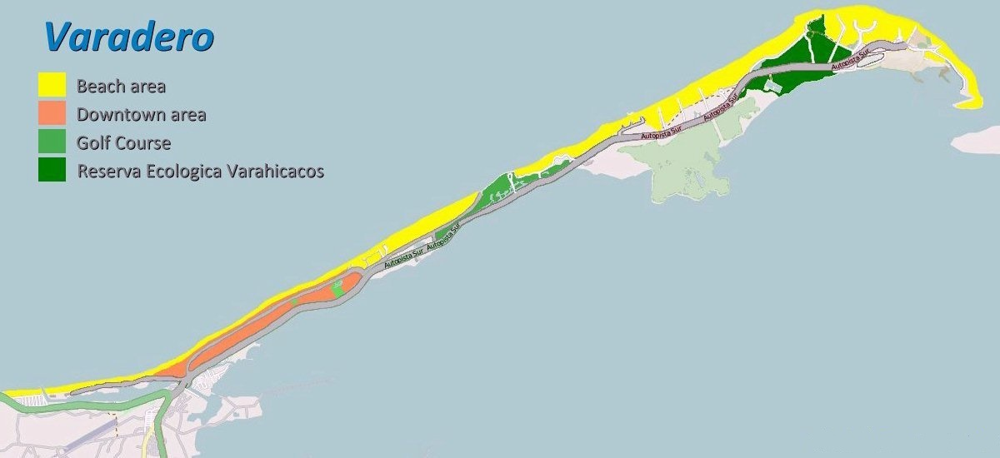

Varadero é uma cidade de Cuba pertencente ao município de Cárdenas, localizada na península de Hicacos, província de Matanzas, 130 quilômetros a leste de Havana. Para o nordeste, Punta Hicacos é o lugar mais setentrional de Cuba. É um território especial da República de Cuba. É o ponto mais próximo dos Estados Unidos, tem 30 km de comprimento, dos quais 22 km são de praias. Limita ao norte com o Estreito da Flórida, ao sul com a baía de Cárdenas, a leste com Cárdenas, a oeste com Sabana Camagüey, sua população é de 26.680 habitantes, dos quais aproximadamente 7.000 vivem na mesma península. Sua principal linha econômica é o desenvolvimento do turismo e a maior força de trabalho é uma função dele. Uma das melhores praias para snorkeling e mergulho [Coral Beach ou Coral Beach], uma bela praia na costa norte de Matanzas e a apenas 15 km de Varadero, a melhor praia de Cuba e uma das melhores praias do mundo, Coral Beach Como o nome indica, é uma praia com um dos maiores recifes de coral de Cuba, onde você pode desfrutar de mais de 50 espécies de corais e mais de 50 espécies de peixes.
Em meados do século XIX, alguns vizinhos de Cárdenas, atraídos pela areia fina e pelas águas quentes e transparentes, ergueram algumas casas. Em vão. O jején e o mosquito os derrotaram. No momento em que voltaram, foram novamente expulsos pelas pragas. E uma terceira tentativa foi frustrada por um duro temporário, que derrubou o construído. Em 1883, dez Cardenenses tenazes e obstinados fundaram uma espécie de sociedade anônima para construir uma aldeia ", a fim de ampliar e promover a cidade de Varadero". Nesta ocasião, nem mosquitos nem tempestades pararam os "decenviros" - assim nomearam os 10 pais fundadores do futuro spa - que, pela quantia modesta de 1.350 pesos espanhóis, adquiriram duas cavalarias na península e imediatamente construíram a igreja , a praça do mercado e o parque. Em 1887, a Câmara Municipal de Cárdenas aprovou os planos do assentamento original, motivo pelo qual 15 de dezembro de 1887 é considerada a data da fundação oficial de Varadero. Para chegar a Varadero, foram necessárias sete horas de trem de Havana para Cárdenas e, a partir daí, embarcar em uma escuna ou um carrinho desajeitado. Mesmo assim, algumas famílias cardenenses e bem informadas da capital estabeleceram seus quartéis de verão. No início do século XX, os edifícios não ultrapassavam 25. A água potável se movia em canos puxados por mulas e a rede de mosquitos continuava infernal. Um dia, Enrique Torres montou um quiosque para vender todos os tipos de itens e, em 1926, ele construiu o hotel identificado por seu sobrenome, pioneiro da atual indústria livre de fumo em Varadere - mais de 50 hotéis e 15.000 quartos. A torre foi demolida nos anos 60 para surpreender, frustração e vergonha de arquitetos e historiadores. A demolição total ocorreu em 1971.
A praia de Varadero, um importante destino turístico, está localizada no norte da província de Matanzas, na península de Hicacos, na região turística de Varadero e na sub-região Matanzas-Cárdenas-Varadero. As paisagens atuais da península de Hicacos são caracterizadas por uma rica diversidade. Considerado um dos principais pólos turísticos do país, cativado por suas finas areias brancas e suas delicadas águas azuis, quentes e transparentes durante todo o ano, nas quais, dependendo do local, os banhistas podem se afastar a dezenas de metros da praia. costa sem cobri-los completamente. Fundada em 1887 como uma cidade, atualmente a Praia Azul de Cuba, como também é chamada, é uma grande cidade cercada por água, localizada na costa norte de Matanzas, exatamente na Península de Hicacos, a 2 horas de estrada de La Havana ou a poucos minutos de avião, para o qual possui um confortável aeroporto internacional. Também é possível por mar. A atual estância balnear de Varadero continua a crescer. Segundo estimativas recentes, estima-se que possa suportar até 25.300 quartos (hoje em torno de 16.000) e é o destino turístico mais importante em Cuba, pois reúne o maior número de acomodações de última geração em todo o país, todos os quatro e cinco estrelas.
O pólo turístico é liderado por várias redes de hotéis cubanas e estrangeiras, como Gran Caribe, Gaviota, Grupo Cubanacán, Sol Meliá, Barceló, entre outros, e possui uma poderosa infraestrutura de restaurantes especializados em comida crioula e internacional, lanchonete, lojas e shopping centers, marinas e centros de mergulho com subsidiárias nos hotéis. Varadero garante as condições necessárias para atracar em uma doca bem habilitada. Para todos, excelentes acomodações oferecem instalações de várias estrelas, incluindo vilas, bangalôs, hotéis e apart-hotéis, localizados em frente à praia ou em avenidas próximas. A rede hoteleira cresceu consideravelmente nos últimos anos e continua em ritmo acelerado, devido à demanda constante de turistas que escolhem Varadero para umas férias inesquecíveis. Ao mesmo tempo, foi desenvolvida toda uma infraestrutura extra-hoteleira, que complementa a oferta e faz de Varadero uma cidade termal digna do melhor turismo.